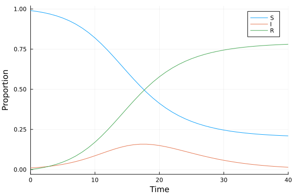
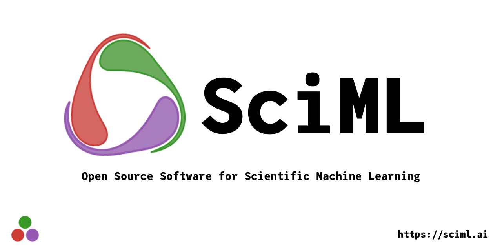
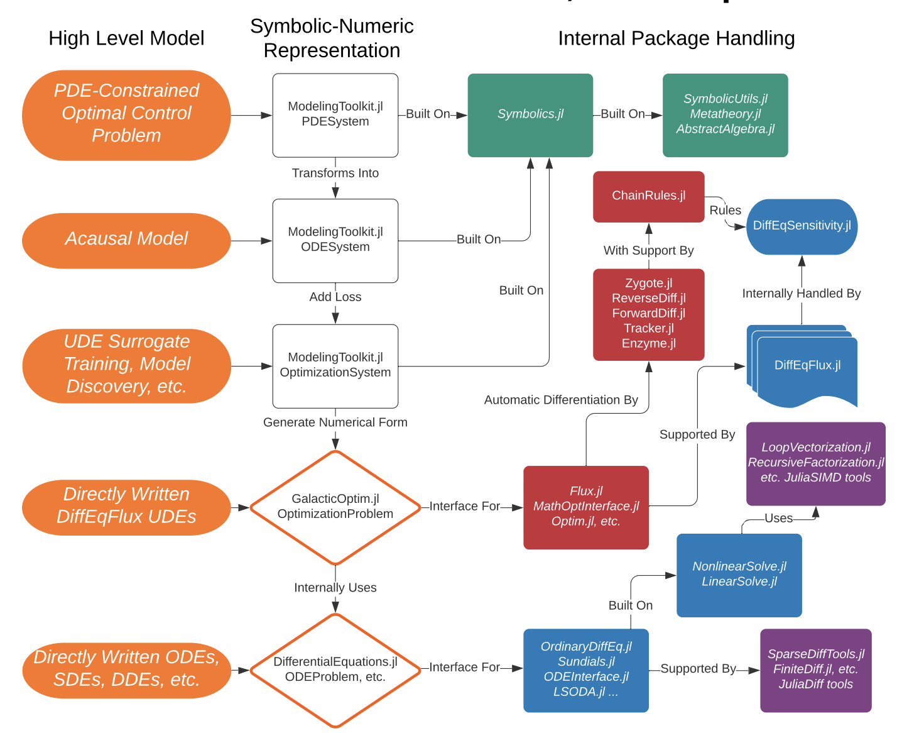
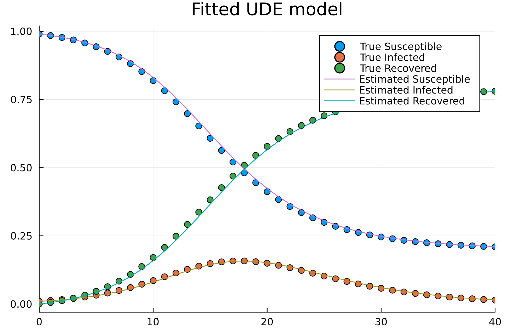
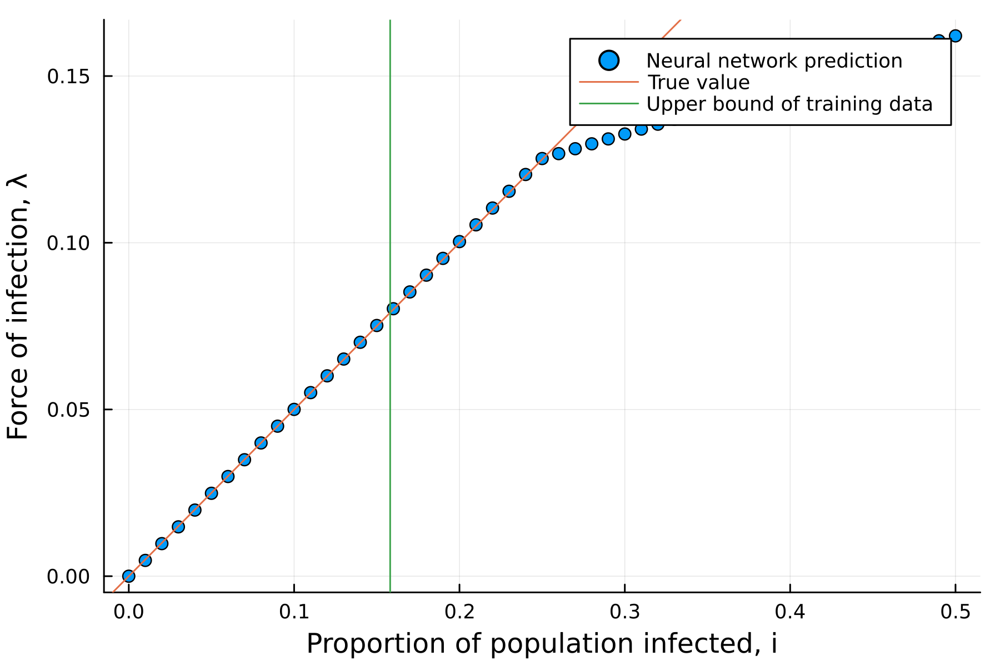

SciML Ecosystem
Scientific Machine Learning [1]

\[\begin{equation} u(t) = \begin{bmatrix} S(t)\\ I(t)\\ R(t) \end{bmatrix} \end{equation}\]
\[\frac{du}{dt} = NN(u, p, t)\]
\[\frac{du}{dt} = f(u, p, t)\]
Scientific Machine Learning
\[\frac{du}{dt} = NN(u, p, t)\]
NN = Chain(Dense(4,32,tanh),
Dense(32,32,tanh),
Dense(32,3))\[\frac{du}{dt} = f(u, p, t)\]
function sir_ode(u,p,t)
(S,I,R) = u
(β,γ) = p
dS = -β*S*I
dI = β*S*I - γ*I
dR = β*S*I
[dS,dI,dR]
end;| Data Driven | Physical Modeling | |
|---|---|---|
| Pros | Universal approximation | Small training set, interpretation |
| Cons | Requires tremendous data | Requires analytical expression |
- The question is
- How to combine two separated ecosystems into unified high-performance framework.
SciML Software
- An Open Source Software for Scientific Machine Learning 2
- Leverage the type inference and multiple dispatche of Julia to integrate packages.
- This ecosystem supports
- Differential Equation Solving
- Physics-informed model discovery
- Parameter Estimation and Bayesian Analysis
- And many others (134 packages in total)

SciML Software3

Example
Suppose we have a ground truth model \(u(t) = [S(t), I(t), C(t)]^T\)
\[\begin{align} \frac{dS}{dt} &= -\beta S(t)I(t)\\ \frac{dI}{dt} &= \beta S(t)I(t)-\gamma I(t)\\ \frac{dR}{dt} &= \beta S(t)I(t) \end{align}\]
where \(\beta\) and \(\gamma\) are nonnegative parameters.
Data and Prior knowledge
Data: \(\{u(t), t\}\)
Model with unknown mechanism \(\lambda: R^3\to R\). Such that \[\begin{align} \frac{dS}{dt} &= -\lambda(I(t), \beta, \gamma) S(t)\\ \frac{dI}{dt} &= \lambda(I(t), \beta, \gamma) S(t)-\gamma I(t)\\ \frac{dR}{dt} &= \lambda(I(t), \beta, \gamma)S(t) \end{align}\]
Also, let \(\lambda\) be the approximated function of a part of the truth model
Use Convolutional Neural Network for surrogation
- By universal approximation theorem,
\[\begin{align} \frac{dS}{dt} &= -\lambda_{NN}(I(t), \beta, \gamma) S(t)\\ \frac{dI}{dt} &= \lambda_{NN}(I(t), \beta, \gamma) S(t)-\gamma I(t)\\ \frac{dR}{dt} &= \lambda_{NN}(I(t), \beta, \gamma)S(t) \end{align}\]
- This is the universal ordinary differential equation[3]
Implementation
Universal Differential Equation (UDE)
\[\begin{align} \frac{dS}{dt} &= -\lambda_{NN}(I(t), \beta, \gamma) S(t)\\ \frac{dI}{dt} &= \lambda_{NN}(I(t), \beta, \gamma) S(t)-\gamma I(t)\\ \frac{dR}{dt} &= \lambda_{NN}(I(t), \beta, \gamma)S(t) \end{align}\]
- To achieve this task, integration of multiple frameworks is necessary.
| Tasks | SciML Package |
|---|---|
| ODE solver | DifferentialEquations.jl |
| Neural network | Flux.jl/Lux.jl |
| Differential programming | Zygote.jl |
| Optimization | Optimization.jl |
Model Discovery and why we need it?
- Suppose the UDE4 model is successfully fitted with dataset \(\{u(t), t\}\)

\[\begin{align} \frac{dS}{dt} &= -\lambda_{NN}(I(t), \beta, \gamma) S(t)\\ \frac{dI}{dt} &= \lambda_{NN}(I(t), \beta, \gamma) S(t)-\gamma I(t)\\ \frac{dR}{dt} &= \lambda_{NN}(I(t), \beta, \gamma)S(t) \end{align}\]
- How is the extrapolation?
- Such as \(u_{ext}(t_{ext}) \notin \{u(t), t\}\)
Model Discovery and why we need it?

- We should get
\[\lambda_{NN}(I, \beta, \gamma) \approx \beta I\]
- However, the extrapolation of nerual network is errornous.
- Sparsification of neural networks is needed (Occam’s net).
- Symbolic regressions5
- DataDrivenDiffEq.jl
Application and Industry6
- Cedar\(^{\text{EDA}}\): differentiable analog circuit with machine learning
- SPICE (C++)
- Pumas-AI: Model-informed drug development with machine learning
- NONMEM (Fortran)
- Macroeconomics, climate, urban development